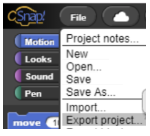
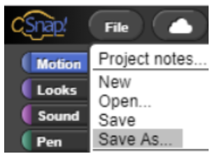
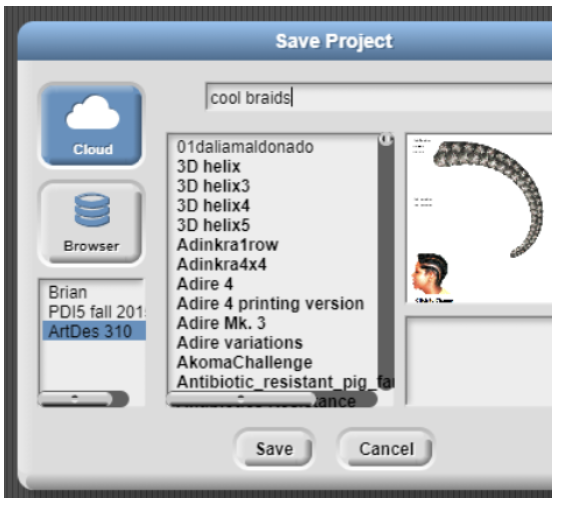

Saving Your Work
There are two ways to save the projects you make with the CSDTs. You can save it to the cloud in your CSDT account, or you can export the project to your local computer. Both ways happen from within the CSDT tool. CSnap is shown below:
Saving to the hard drive: select “export project” from the file menu:

Saving to the cloud: select “Save As” from the file menu:

Give it a name (I called it “cool braids”) and if you have a classroom, select it from the class list (in this case ArtDes310):
